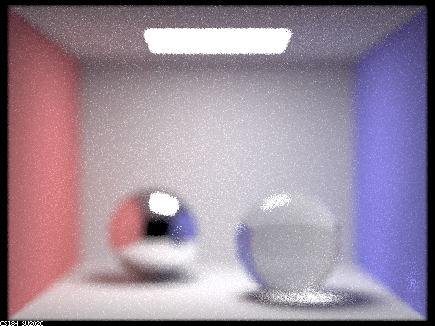
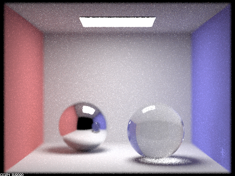
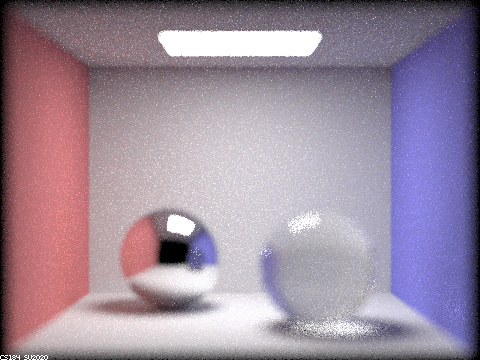
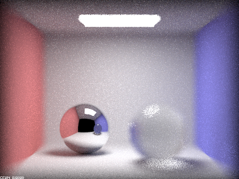
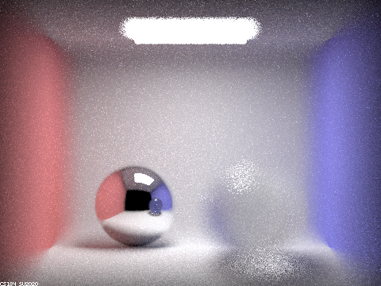

Assignment 3: PathTracer
Shikai Qiu
In this project, I implement some core routines of a physically-based renderer using a pathtracing algorithm, relying on ray-scene intersection, acceleration using Bounding Volume Hierarchy, and physically based lighting effects. Sampling is used heavily to evaluate integrals efficiently and accurately. Importance sampling is used to evaluate radiance integrals with reduced variance, while Russian Roulette is used to create unbiased estimators for infinite-dimensional path integrals over light trajectories.
Part 1: Mirror and Glass Materials
By implementing the BSDFs for mirror and glass materials, we are able to render scences such as the following where two glass spheres both reflect and refract light. We can observe the added effects as we increase max_ray_depth from 0 to 100. With depth = 0, we see only emitting light source, which is the area light on the ceiling.
With depth = 1, we can see the light reflecting off the walls and the surfaces of the spheres.
With depth = 2, we can see the light: reflecting from the ceiling, reflecting from one sphere to another and then into the camera(with a delay of one iteration for the reflected image).
With depth = 3, we can see the light reflected from the left sphere exiting the sphere on the right and the illumination on the ground by the light refracted through the right sphere from the light source.
 max_ray_depth = 3
max_ray_depth = 3
|
With depth = 4, we can see the light that just exited the right sphere has hit the wall on the right forming a white spot. This also means the illumination on the ground under the right sphere is also increased by the light reflecting from the left sphere.
With depth = 5, the image has essentially converged and no main feature has changed except for minor details in the mutual reflection of the two spheres which will keep on updating forever.
With depth = 100, the image has essentially converged. The only noticeable different from depth = 5 is the overall illuminance which has increased due to the 95 non-negative terms we just added to the series.
Part 4: Depth of Field
Here we implemented the ideal thin lens to replace the pinhole camera model for more realistic images. The thin lens model allows each pixel on the sensor to receive a wider range of light rays from the scene. In particular, if an object is out of focus, different rays coming from the object will not converge to one point on the sensor, thus creating a blurred part of the image that gives rise to the depth of field. Here we show this effect by comparing different focal lengths d and aperture sizes b.
Varying focal length
|

b = 0.1 d = 3.5 everything is out of focus(too short)
|
|

b = 0.1 d = 4.45 focus is on the right sphere
|
|
b = 0.1 d = 5 focus is on the left sphere
|
|

b = 0.1 d = 6.5 focus is beyond the back wall(too long)
|
Varying aperture size
 b = 0.0125 d = 5 very large depth of field
b = 0.0125 d = 5 very large depth of field
|
|
b = 0.1 d = 5 medium depth of field
|
|

b = 0.4 d = 5 short depth of field
|
|

b = 0.8 d = 5 extremely short depth of field
|